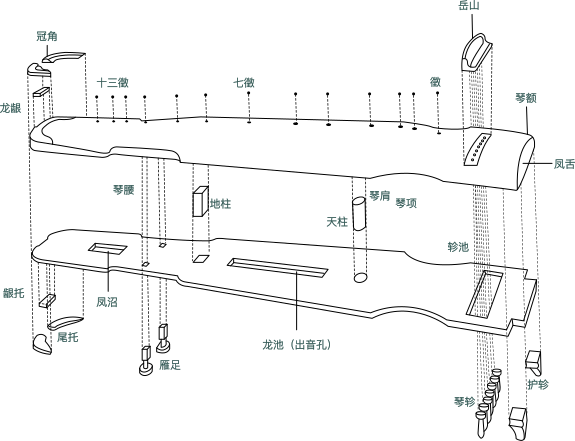
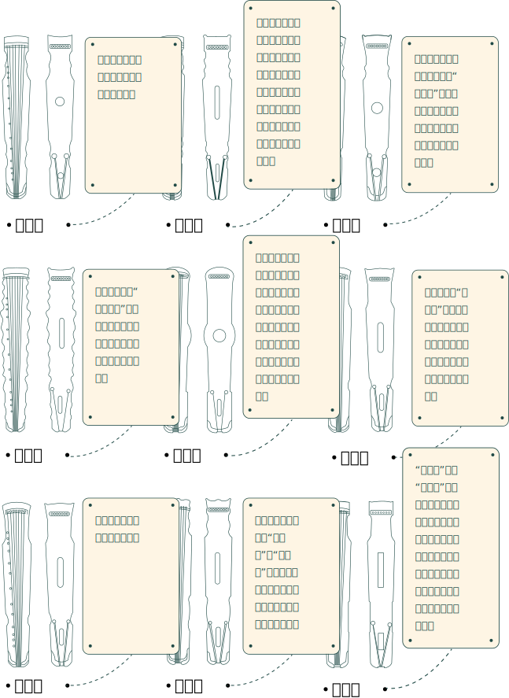

琴艺
减字谱
中国古琴常用的一种以记写指位与左右手演奏技法为特征的记谱法。 这种记谱法使用减字拼成某种符号记录左手按弦指法和右手弹奏指法，它是一种只记录演奏法和音高，不记录音名、节奏的记谱法。减字谱是对文字谱记谱法的一次重大改革，是一种沿用千年而未被取代的古老记谱法。
右手“八法”
右手“八法”为古琴最基本的八种指法，这八种指法或紧、或慢、或多、或少等诸多不同的组合，共同构成了右手其它的指法。其他指法实由八法变化组合而成。

古琴声韵悠远深邃、朴拙内敛，历代文人雅士不但“无故不撤琴瑟”，而且十分注重古琴的教化作用。弹琴既是他们修身养性的方式，也是他们胸怀和心声的寄托。王夫之、左宗棠、谭嗣同等湖湘先贤名士与古琴同音共律，终身为伴，为湖湘地区的古琴文化添上了浓墨重彩的一笔。
传说圣人制琴时是效法天地：古琴标准长三尺六寸五分，对应了周天三百六十五度和一年的三百六十五天。琴身之上的十三个徽位是效法了一年十二个月份外加一个闰月，并且其身上圆下平代表先民天圆地方的宇宙观，且额宽六寸，尾宽四寸，分别对应六合与四时。古琴虽小，五脏俱全，包含了天、地、人和时间，十分契合天人合一的审美观。
琴界有言：“唐圆宋扁。”此为清末民初的古琴大家杨宗稷提出，后成为定论。古琴造型优美，历来为斫琴家所重视，历代琴式记载多达五十多种。同款式之间区别甚微，只是项、腰两处向内凹曲有所区别，反映着各个时代不断发展的文化理念。
*数据来源于湖南省博物馆-《馆藏古琴整理与研究》
中国古琴常用的一种以记写指位与左右手演奏技法为特征的记谱法。 这种记谱法使用减字拼成某种符号记录左手按弦指法和右手弹奏指法，它是一种只记录演奏法和音高，不记录音名、节奏的记谱法。减字谱是对文字谱记谱法的一次重大改革，是一种沿用千年而未被取代的古老记谱法。
右手“八法”为古琴最基本的八种指法，这八种指法或紧、或慢、或多、或少等诸多不同的组合，共同构成了右手其它的指法。其他指法实由八法变化组合而成。
根据《正文对音捷要真传琴谱》记载，有十四种场合是适宜弹琴。逢知己，遇可人，对道士，处高堂，升楼阁，在宫观，坐石上，登山埠，憩空谷，游水湄，居舟中，息林下，二气清朗，风清月明等。
琴文化本身就是一种非常个性化的艺术，不同地域、不同师承的琴家的风格彼此都不相同。同一地域、同一师承的琴家的风格也是各有特点而不尽相同。同一曲目，不同的琴家就会有不同的理解，而形成不同的风格。所以，在琴的领域，也同样有流派之说。